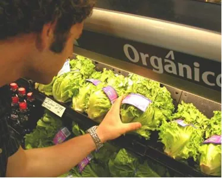
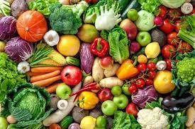

No cotidiano, esse termo é usado para se referir a alimentos produzidos sem a adição de adubos químicos e de agrotóxicos. É uma expressão muito empregada pela mídia e seu uso teve início com a ideia de produzir alface e verduras sem esses aditivos químicos, para evitar produtos contaminados e envenenamento. Com o tempo, porém, essa prática se estendeu a outros produtos, como legumes, frutas, café, vinho, etc. Existem até mesmo produtos orgânicos industrializados.O preço desses produtos costuma ser maior, mas as vantagens estão no melhor sabor e no fato de serem alimentos mais saudáveis.

A produção desses alimentos é pouca em comparação a daqueles que são feitos com o uso de aditivos químicos. No entanto, esse ramo tem crescido muito no Brasil e esse tipo de alimento já é considerado oficialmente como uma categoria de produto específico, à parte do convencional, com regulamentos para a sua produção, certificação e comercialização.
No entanto, apesar de esse termo já estar bem fixado na linguagem do dia a dia, se formos entender o que é química orgânica, veremos que as expressões “produtos orgânicos”, “hortaliças orgânicas”, “legumes orgânicos”, etc. têm, sem dúvida, um emprego “forçado”. Pois a química orgânica é o estudo dos compostos do elemento carbono com propriedades características.
Assim, todo e qualquer alimento, qualquer que seja seu método de produção, é formado, fundamentalmente, por substâncias orgânicas. Os compostos orgânicos estão presentes em todos os seres vivos.
Uma alimentação saudável, diferentemente do que muitos pensam, não é uma alimentação cheia de restrições ou sem sabor. Uma alimentação saudável é aquela que garante, principalmente, que seu organismo esteja recebendo todos os nutrientes de que ele precisa. Para ser uma alimentação realmente saudável, é preciso pensar em variedade, equilíbrio, quantidade e na segurança dos alimentos que estão sendo ingeridos.
os alimentos in natura e minimamente processados devem ser a base do consumo diário. Isso porque, quando consumidos em grande variedade e sendo maioria de origem vegetal, são a chave para uma alimentação nutricionalmente balanceada e promotora de um sistema alimentar sustentável.
Os alimentos in naturasão obtidos diretamente de plantas ou de animais, e são adquiridos para o consumo sem que tenham sofrido qualquer alteração após deixarem a natureza. São exemplos destes: frutas, verduras, legumes, raízes e tubérculos (como a batata e a mandioca) e ovos. Já os alimentos minimamente processados passam por processos mínimos de industrialização, como limpeza, secagem, fermentação, embalagem, pasteurização, resfriamento ou congelamento. Nesses alimentos não são acrescentados sal, açúcares, óleos, gorduras ou outras substâncias.
São considerados alimentos minimamente processados: os alimentos in natura que foram embalados, fracionados, refrigerados ou congelados, cereais (arroz, milho, aveia), leguminosas (feijões, lentilha, grão-de-bico, ervilha), farinhas de mandioca, milho ou trigo, massas frescas ou secas, carnes frescas, resfriadas ou congeladas, leite, iogurte sem adição de açúcar, cogumelos, frutas secas, sucos de frutas integrais, castanhas e sementes, ervas e especiarias, chás, café, e água potável.